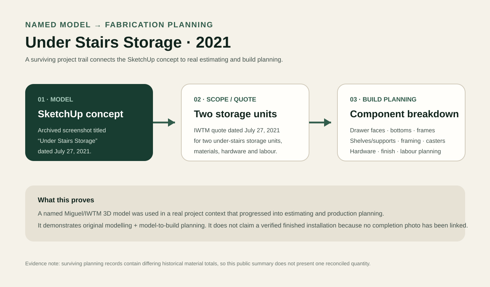

Design & Making
3D Design & Fabrication Planning
Using 3D models to turn physical ideas into clearer component, material and production decisions.

Featured design
See the space, proportions and dimensions together.
The kitchen model communicates the arrangement of cabinets, work surfaces and an island alongside key measurements. It makes the layout easier to discuss, assess and refine before moving into the detailed decisions required for fabrication.
A separate build-planning example
Make an awkward under-stairs space practical to build.
A separate Under Stairs Storage project required planning around changing heights, stepped geometry, usable storage zones, drawer and shelf structure, framing and hardware. A 3D concept made those decisions easier to evaluate before fabrication.
The project records connect that concept to an IWTM quotation for two under-stairs storage units and a component-level planning sheet used to estimate materials, hardware and labour. This example is distinct from the featured kitchen layout.

From model to planning
The value of the model was what it made possible next.
- Model the spatial problem: represent the changing stair profile and storage volumes in SketchUp.
- Break the design into buildable parts: drawer faces, bottoms and frames; shelving/supports; structural framing.
- Plan supporting hardware: casters, fasteners, handles and finishing consumables appear in the surviving project breakdown.
- Estimate production: the same project records include material, labour and work-time planning rather than stopping at a presentation image.
- Quote the scoped work: an IWTM quote dated July 27, 2021 describes two Under Stairs Storage Units and ties the design exercise to a real commercial project.
What this proves
Original 3D work connected to a real fabrication-planning workflow.
The kitchen layout demonstrates how 3D modelling can communicate a measured design. The separate Under Stairs Storage project provides a documented example of turning a concept into component, material, hardware, labour and quotation decisions.
Together, they show two useful sides of the same practice: clear visual design and practical production planning.
Broader modelling work
More furniture concepts, modelled to compare form and proportions.
Additional studies explore furniture configurations and dimensional relationships.


Paired proof
3D planning and physical delivery are shown separately where the evidence is strongest.
The Modular Platform Bed case study demonstrates fabrication, adaptation, transport and installation. The Under Stairs Storage records demonstrate design connected to production planning, while the kitchen model featured above illustrates spatial design and measurement communication.
Each example shows a different part of the work.